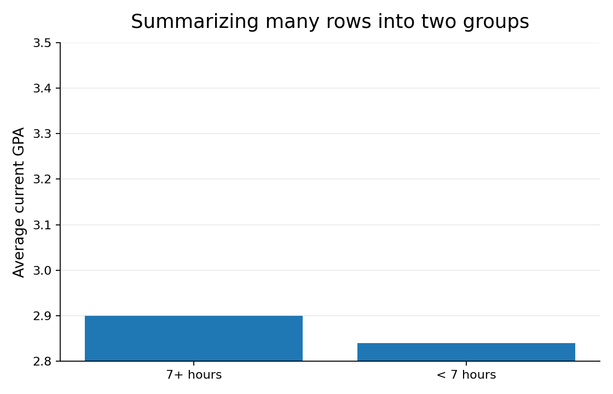
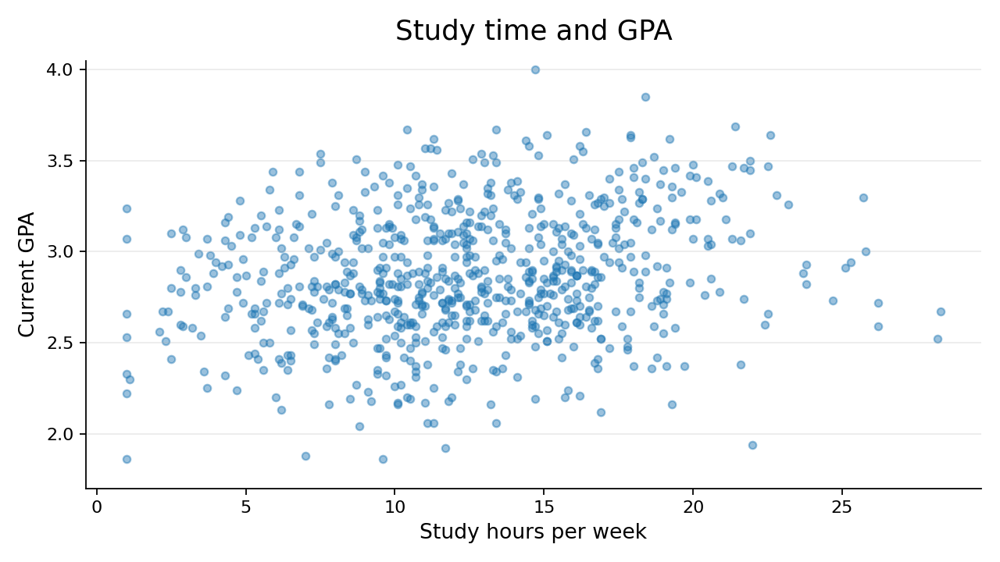
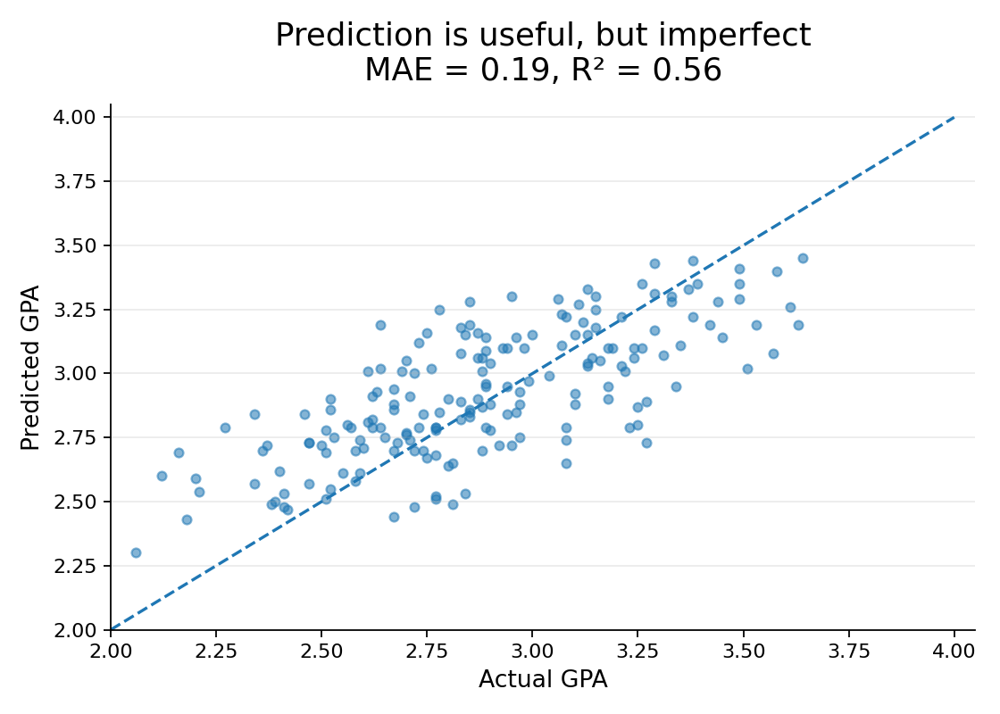

flowchart LR A[One student] --> B[Many students] B --> C[Summarize] C --> D[Answer questions about a group]
Day 2 | From Observations to Answers
What would you want to know about a student if you were trying to understand academic success?
Think of one student. What would you measure about them?
Habits
Sleep, study time, attendance, exercise, phone use
Context
Work hours, commute, housing, course load
Background and outcomes
Previous GPA, year in school, major, current GPA
You can probably think of variables we missed. That is part of deciding what data to collect.
| student_id | year | previous_gpa | current_gpa | study_hours_per_week | sleep_hours_per_night | work_hours_per_week | attendance_rate |
|---|---|---|---|---|---|---|---|
| 10001 | Junior | 3.13 | 3.37 | 18.9 | 8.3 | 3.9 | 0.86 |
| 10002 | Junior | 3.05 | 3.12 | 2.9 | 6.7 | 5.8 | 0.82 |
| 10003 | Junior | 2.89 | 2.81 | 6.8 | 7.7 | 10.5 | 0.85 |
| 10004 | Senior | 3.56 | 3.33 | 14.2 | 7 | 8 | 0.97 |
| 10005 | First-year | 3.35 | 3.46 | 18 | 6.5 | 6.8 | 0.9 |
| 10006 | First-year | 3.55 | 3.07 | 12.5 | 4.9 | 10.3 | 0.92 |
| 10007 | Junior | 4 | 2.81 | 10.2 | 7.3 | 4.5 | 0.71 |
| 10008 | Sophomore | 2.8 | 2.69 | 15.9 | 7.7 | 1.9 | 0.85 |
This is a synthetic dataset of 750 fictional students.
That clean table is what we wish we always got. Here is what data often look like in practice.
| student_id | year | major | current_gpa | study_hours_per_week | sleep_hours_per_night | work_hours_per_week | attendance_rate |
|---|---|---|---|---|---|---|---|
| 10042 | Junior | Undeclared | 2.6 | 14.6 | 6.4 | 9 | 0.72 |
| 10279 | Senior | Exercise Science | 2.7 | 12.4 | nan | 4.9 | 0.88 |
| 10527 | Sophomore | Psychology | 2.85 | twelve | 6.3 | 18.1 | 0.97 |
| 10437 | Junior | Undeclared | 2.06 | 13.4 | -3 | 10.1 | 0.75 |
| 10459 | Senior | Biology | 7.8 | 11.8 | 6.9 | 6.7 | 0.91 |
| 10341 | Sophomore | English | 2.61 | 15.5 | 5.7 | 8.9 | 95 |
| 10020 | jr | Business | 3.27 | 11.8 | 7 | 6.1 | 1 |
| 10632 | JUNIOR | Psychology | 3.38 | 9.8 | 7 | 15.5 | 0.84 |
| 10429 | Sophomore | bio | 3.18 | 21.1 | 6.4 | 15 | 0.89 |
| 10536 | Senior | Computer Science | 2.47 | 9.4 | 6.6 | 0.79 | |
| 10598 | First-year | Computer Science | 3.33 | 19.6 | 6.9 | 4.4 | 0.82 |
| 10598 | Senior | English | 2.72 | 11.6 | 8.2 | 21.6 | 0.79 |
What would make you nervous about summarizing or modeling these rows?
We will learn how to clean messy data later. For now, notice that useful data rarely arrive perfectly prepared.
Every row represents something.
That something is what we use to answer questions.
Rows
One row represents one student.
Columns
Columns tell us what we know about each student.
Rows tell us who or what we observed. Columns tell us what we measured.
| student_id | year | previous_gpa | current_gpa | study_hours_per_week | sleep_hours_per_night | work_hours_per_week | attendance_rate |
|---|---|---|---|---|---|---|---|
| 10001 | Junior | 3.13 | 3.37 | 18.9 | 8.3 | 3.9 | 0.86 |
What questions can this row answer?
Questions about this student.
flowchart LR A[One student] --> B[Many students] B --> C[Summarize] C --> D[Answer questions about a group]
We can aggregate individual observations to answer group-level questions.
| question | answer |
|---|---|
| How many students are in the dataset? | 750 |
| What is the average GPA? | 2.86 |
| What is the median GPA? | 2.84 |
| What proportion attend at least 90% of class meetings? | 0.43 |
| What proportion work more than 20 hours/week? | 0.12 |
| What is the average sleep per night? | 6.72 |
A summary statistic is useful because it turns many rows into an answer to a question.
| year | students | avg_sleep | avg_study | avg_gpa |
|---|---|---|---|---|
| First-year | 212 | 6.52 | 13.23 | 2.8 |
| Sophomore | 181 | 6.68 | 12.3 | 2.86 |
| Junior | 188 | 6.84 | 12.31 | 2.87 |
| Senior | 169 | 6.89 | 11.73 | 2.93 |
Raw data: one row = student.
Summary: one row = class year.
Student-level rows
Who seems likely to earn a higher GPA?
Group-level rows
How do class years compare on average?
Changing the unit represented by a row changes the questions the data can answer.
| Dataset | What might one row represent? |
|---|---|
| Student success survey | ? |
| Course grade records | ? |
| Student sleep diary | ? |
| Campus dining transactions | ? |
What one row represents determines what the dataset knows.
Suppose our dataset has 750 students. What does that let us say?
The answer depends on where those 750 students came from.
Situation 1
These are all students in a particular course this semester.
Situation 2
These are a random sample of BYU students.
Situation 3
These are students who chose to answer a link posted on Instagram.
Same number of rows. Very different claims.
flowchart TD Q[Question we want to answer] --> P[Population we care about] P --> S[Sample we actually observe] S --> D[Rows in our dataset] D --> C[Claims we can responsibly make]
Lots of rows do not automatically support broad claims.
Our 750 observed students average 2.86 GPA.
| sleep_group | students | avg_gpa | median_gpa |
|---|---|---|---|
| 7+ hours | 294 | 2.9 | 2.88 |
| < 7 hours | 456 | 2.84 | 2.81 |
What does this comparison suggest?
And what does it not prove?

A pattern is not automatically an explanation.

There is a pattern, but not a perfect one.
So far we have looked backward: what happened?
What if we want to look forward: what will happen?
Prediction uses the same data, but asks a different question.
Describe
What happened in the rows we observed?
Compare
How do groups or variables differ?
Predict
What might happen for a new observation?
Description and prediction use the same data in different ways.
| variable | value |
|---|---|
| previous_gpa | 3.45 |
| study_hours_per_week | 15.0 |
| sleep_hours_per_night | 7.2 |
| work_hours_per_week | 8.0 |
| attendance_rate | 0.95 |
| credits | 15 |
| phone_hours_per_day | 3.8 |
| year | Sophomore |
| housing | Off campus |
Before seeing a model, what GPA would you predict?
flowchart LR X[What we know about<br/>a student] --> M[Model] M --> Y[Predicted GPA]
The model learns a pattern from students we already observed, then applies that pattern to a new student.
[ =b_0+b_1(Previous GPA)+b_2(Study)+b_3(Attendance)+ ]
Each piece of information about a student gets a weight (\(b_1, b_2, b_3, \ldots\)).
The model learns those weights from the students we already observed.
How should the model decide how much weight to give each piece of information?
We are not learning regression today. We are noticing that prediction creates a mathematical problem.
3.13 GPA
A useful estimate, not a certainty.

Each point is a student the model did not train on. Points away from the diagonal are prediction errors.
When would this prediction be useful, and when would you be cautious?
Prediction is not certainty, and prediction is not automatically explanation.
What kinds of expertise did we need to answer one seemingly simple question?
Do not name the disciplines yet. Reconstruct them from the problems we encountered.
What should we measure?
We needed knowledge of students, learning, and the setting.
How do we handle 750 rows?
We needed tools for storing, transforming, and computing with data.
What do the rows let us claim?
We needed reasoning about samples, variation, and uncertainty.
How do variables combine?
We needed a mathematical way to express and learn relationships.
How do we show patterns?
We needed visualization and communication.
What should we do with the result?
We needed context, judgment, and attention to consequences.
flowchart TD Q[Real questions] --> DK[Domain knowledge] Q --> CS[Computing] Q --> ST[Statistics] Q --> MA[Mathematics] Q --> CO[Communication] Q --> HJ[Human judgment] DK --> DS[Data science] CS --> DS ST --> DS MA --> DS CO --> DS HJ --> DS
Data science is interdisciplinary because real questions create different kinds of problems.
flowchart LR Q[Question] --> O[Observe] O --> R[Represent] R --> S[Summarize] S --> G[Generalize] G --> P[Predict] P --> E[Evaluate] E --> C[Communicate] C --> D[Decide]
We will spend the semester getting better at each part.
For any dataset you encounter, ask:
What does one row represent, and what larger group are we trying to learn about?
DS 115 - Exploring Data Science